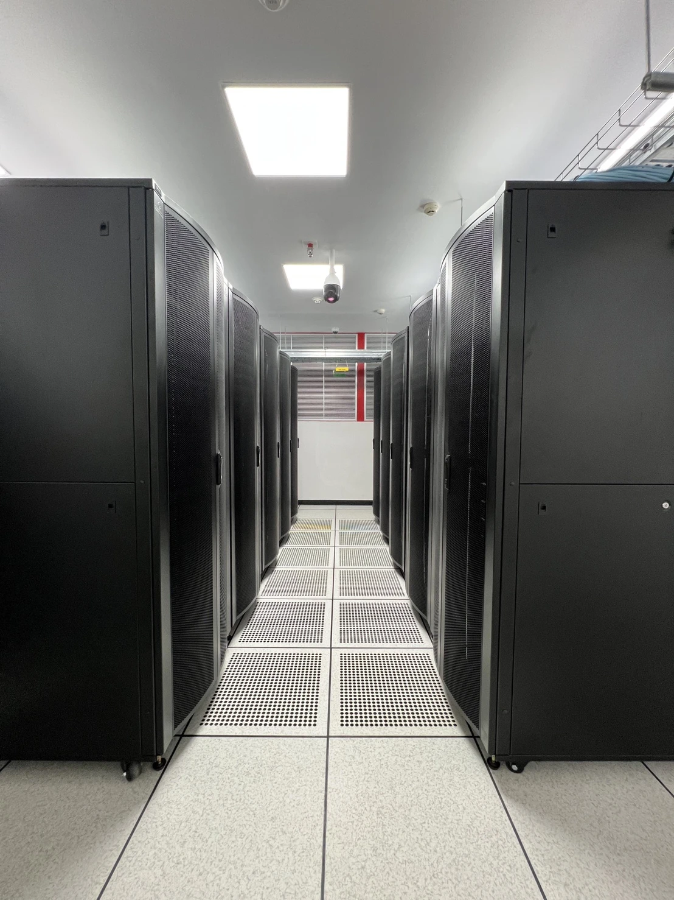

พัฒนาองค์กรสู่ Digital Organization ใน Horizontal (SCM) และ Vertical (IS for Management) ทุกระดับตามแผนระยะที่2 เพื่อรองรับการพัฒนาไปสู่ Agentic Organization ในอนาคต
→Transform the enterprise into a fully digital organization — next step: Agentic Organization
Horizontal (SCM) + Vertical (IS) digital transformation across all business processes
The enterprise data bedrock — spans all 4 years, from dictionary to continuous quality assurance
Phased Odoo deployment from foundation modules through full multi-company integration
Strategy-to-execution management system, evolved through each phase
Central digital experience and workflow-automation platform
Planned retirement of legacy platforms (Exact, Epicor, others)
หนึ่งองค์กร หนึ่งระบบ ERP — รวมระบบ ERP ที่กระจัดกระจายอยู่ในกลุ่ม PCC มาไว้บนแพลตฟอร์มเดียว เพื่อให้ข้อมูลอยู่บนฐานเดียวกันทั้งกลุ่ม และเป็นตั้งต้นของ Roadmap การขึ้นระบบในหัวข้อถัดไป
รองรับทั้ง Business Generation และ Demand Satisfaction
แนวทางการพัฒนาและปรับปรุงด้าน Digital เป็นหนึ่งเดียว
แผนการขึ้นระบบ Odoo Enterprise แบบ Multi-Company ของกลุ่ม PCC ครอบคลุมทุกนิติบุคคลในกลุ่ม แบ่งเป็น 3 Phase ตามปีงบประมาณ โดยแต่ละ Phase สอดคล้องกับสถานะทางบัญชีของแต่ละบริษัท (Subsidiary — Full Consolidation / Associate — Equity Method) และมาตรฐาน Governance กลาง ที่ล็อกไว้ตั้งแต่ Phase แรก
PSP คือคู่ Transaction ที่มี Volume สูงที่สุดของ PEM แม้ในโครงสร้าง 3-Phase นี้ PSP จะเข้าระบบใน Phase 2 (ห่างจาก PEM ประมาณ 1 ปีงบประมาณ) ซึ่งดีกว่าการแยกห่างหลาย Phase มาก แต่ยังควรมี Intercompany Transaction Log กลางไว้ใช้งานระหว่างรอ PSP เข้าระบบ และทำ Reconciliation ให้ตรงกันก่อนเปิด Inter-Company Rules แบบ Auto-flow ใน Phase 2
แนวทางนี้อิงจาก PCC Group Odoo Roadmap v3 (อัปเดตล่าสุด) จัดกลุ่มตามวันที่แล้วเสร็จจริงของแต่ละบริษัท แทนการแสดงเป็นแท่งเวลา — อ่านง่ายขึ้นและตรงกับข้อมูล ปีที่แล้วเสร็จ ที่ยืนยันแล้ว
หมายเหตุ: "+Console" ที่ PEM/PPP/PSP คือการปิดงบรวมภายในเครือของบริษัทนั้นกับ Subsidiary ของตัวเอง ส่วน "PCC (Console)" ลำดับสุดท้ายคือการปิดงบรวมทั้งกลุ่ม 6 บริษัทหลัก
แม้ PEM+Console จะเสร็จตั้งแต่ 12/2570 แต่ PSP+Console ซึ่งเป็นคู่ Transaction ที่หนักที่สุดของ PEM เข้าระบบและเสร็จสมบูรณ์ในปี 2571 (ห่างจากช่วงที่ PEM เริ่มเสถียรประมาณ 1 ปี) ยังต้องมี Intercompany Transaction Log กลางไว้ใช้งานระหว่างช่วง 2570 ก่อน PSP เข้าระบบจริงในปี 2571 และทำ Reconciliation ย้อนหลังให้ตรงกันก่อนเปิด Inter-Company Rules แบบ Auto-flow
เร่งให้ PEM, PSL, PPP และ PCC (แยก) แล้วเสร็จพร้อมกันภายในปีเดียว (12/2570) ลดช่วงเวลารอคอยระหว่าง บริษัทหลักลงมากเมื่อเทียบกับแผนก่อนหน้า และยังคง PCC (Console) เป็นลำดับสุดท้ายเพื่อให้ Group Consolidation สมบูรณ์เมื่อทุกนิติบุคคล Stable แล้วเท่านั้น
ก่อนเข้าสู่ Phase 1 (PEM+Console) กลุ่มบริษัทเตรียมความพร้อม 2 แนวทางคู่ขนานกันในปี 2569 — PEM เริ่ม Gap Analysis และ Kick-off Implementation จริง ในขณะที่อีก 4 บริษัทที่เหลือทำ Blueprint เตรียมความพร้อมของกระบวนการก่อน Go-Live
ระหว่างรอ Implementation จริง PSP จะทำ Process Improvement (TOM & Blueprint "to be") ในปี 2570 เพื่อนำข้อมูลไปทำ Gap Analysis เนื่องจาก PSP มีเป้าหมายลดจำนวนพนักงานในองค์กร แต่ยังไม่มีแนวทางที่ชัดเจน จากการประเมินสถานะปัจจุบันพบว่า:
ขึ้นอยู่กับประเด็นค่าเสื่อมของระบบเดิม (Epicor) ที่ PSP ใช้อยู่ เทียบกับเป้าหมายเชิงปฏิบัติการเรื่องการลดจำนวนพนักงานของ PSP ซึ่งยังอยู่ระหว่างทำ Process Improvement (TOM & Blueprint) เพื่อหาแนวทางที่ชัดเจนก่อน
ประเมินเทียบกับวัตถุประสงค์หลักของบริษัทแม่ (PCC) คือ Single Source of Truth และ Group Financial Consolidation
| ด้าน | Pro | Con |
|---|---|---|
| IT Governance ระยะยาว | Application ใหม่ที่ PSP ต้องการ ต้องผ่าน Governance ของ Odoo/ส่วนกลาง ทำให้ควบคุมมาตรฐานและลด Silo ได้ | การพัฒนา Application แยกตามความต้องการเฉพาะหน้าจะยังดำเนินต่อไปโดยไม่ผ่านการควบคุมจากส่วนกลาง/PDE เหมือนที่ผ่านมา ทำให้ระบบ IT ของ PSP กระจัดกระจายมากขึ้นเรื่อย ๆ ยากต่อการวางมาตรฐานและ Data Governance ของกลุ่ม อีกทั้งยังผูกติดกับความรู้เฉพาะบุคคล (Key Person Dependency) |
| Single Source of Truth | ข้อมูล PSP+PPD อยู่ Database เดียวกับ PEM/PSL/PPP/PCC — PCC ดูข้อมูลได้ Real-time ลึกถึงระดับ Transaction ไม่ใช่แค่ตัวเลขสรุป (เช่น CRM, Customer, Vendor, Product, Catalog) | ต้องรอ Ownership ของ PPD ชัดเจนก่อน (คาดว่า PSP ถือหุ้น 100% ภายใน 05/2570) ไม่งั้นโครงสร้าง Company ใน Odoo อาจต้องปรับใหม่ภายหลัง |
| Intercompany | ลด Manual Reconciliation ของคู่ Transaction ที่หนักที่สุดในกลุ่มได้จริง (เช่น TCS, Omni Revenue → Stock, Pricelist, Catalog, Delivery) | ถ้าเลือกแนวทางหลัก (2571) ต้อง Write-off มูลค่าคงเหลือของ Epicor ที่ยังเหลืออีก 4 ปี — กระทบงบกำไรขาดทุนก้อนเดียว |
| Operation ของ PSP | สนับสนุนเป้าหมายลดคนของ PSP ด้วย Automation จาก Odoo | เพิ่มภาระ Change Management ให้ PSP ในช่วงที่กำลังปรับโครงสร้างองค์กร (ลดคน) พร้อมกัน |
| Audit | Auditor ตรวจสอบผ่านระบบเดียวได้ทั้งกลุ่ม ลดความซับซ้อนตอน Audit ประจำปี | — |
| Others | — | ทุก Feature ใหม่ของกลุ่มบน Odoo ในอนาคต (เช่น Real-time Dashboard, Automated Statutory Report) จะยังไม่ครอบคลุม PSP จนกว่าจะ Go-Live จริง |
ทั้งแนวทางหลักและ Optional 1 ท้ายที่สุดแล้ว PSP จะได้ใช้ Automation จาก Odoo เหมือนกัน ต่างกันแค่ปีที่ Go-Live จริง (2571 หรือช่วง 2573–2575) การเลือกช้าลงช่วยลดผลกระทบทางบัญชีจากค่าเสื่อม Epicor ที่ยังตัดไม่หมด แต่แลกมาด้วย ระยะเวลา Manual Intercompany Reconciliation ระหว่าง PEM-PSP ที่ยาวขึ้น และอาจทำให้เป้าหมายลดจำนวนพนักงานของ PSP (ซึ่งต้องพึ่ง Automation จาก Odoo) ล่าช้าตามไปด้วย ควรตัดสินใจร่วมกับทีมบัญชี (เรื่องค่าเสื่อม Epicor) และทีม Operation ของ PSP (เรื่องผลจาก Process Improvement/Blueprint ที่กำลังทำอยู่ในปี 2570) ก่อนล็อกแนวทางจริง
คลิกเพื่อดูรายละเอียดแต่ละหัวข้อ
PEM, PSL, PPP[Company]-[C/V]-[เลขรัน] เช่น PEM-C-00001[Company]-INV/2569/00001x_pem_..., x_ppp_...ir.config_parameter หรือ XML ID แทนตัวเลข ID ที่ Database สร้างอัตโนมัติcompany_id อย่างถูกต้องแผนการพัฒนา PMIS-II ของกลุ่ม PCC เริ่มจากการทำ Gap Analysis เทียบระหว่างระบบ PMIS ปัจจุบันกับ Odoo ERP โดยใช้กรอบ PCF 13 Category (Process Classification Framework) เป็นเกณฑ์เปรียบเทียบ ก่อนเข้าสู่ขั้น Implementation จริงตาม Gap ที่พบ
หมายเหตุ: PCF (Process Classification Framework) 13 Category คือกรอบหมวดหมู่กระบวนการที่ใช้เปรียบเทียบ Gap ระหว่างระบบ PMIS ปัจจุบันกับ Odoo ERP ในสโคปของ Roadmap ฉบับนี้ ระบุ Category 1: Strategy เป็นหมวดแรกที่ดำเนินการ ส่วน Category ที่เหลืออีก 12 หมวด ยังไม่ได้ระบุรายละเอียดหรือ Timeline — ควรกำหนดเพิ่มเติมเมื่อ Scope ชัดเจนขึ้น และคอลัมน์ Digital Process, Owner, PM และ Budget Owner ยังไม่ได้กำหนดผู้รับผิดชอบ — ใส่เป็น TBD ไว้ก่อน รอการยืนยันทีมงานที่เกี่ยวข้อง
กรอบ 5 แพลตฟอร์มตามแนวคิด DBTP ของ Gartner โดยมี Data and Analytics Platform เป็นศูนย์กลางเชื่อมอีก 4 แพลตฟอร์มเข้าด้วยกัน
Smart Manufacturing — IoT, Automation และ Data Analytics บนสายการผลิต
ระบบอัจฉริยะเพื่อบริหารและควบคุมการใช้พลังงานและสาธารณูปโภค
[The Foundation] แบ่งเป็น 2 ส่วนหลัก

ศูนย์ข้อมูลใหม่ พร้อมมาตรฐานความปลอดภัยของระบบเครือข่ายและข้อมูล
📄 คลิกดูข้อมูล→[The Human–AI Bridge]
สรุปกิจกรรมด้าน Digital Mindset & Culture ที่ดำเนินการไปแล้ว : AI Got Talent ,อบรม Copilot ทีมเลขา
📎 รายละเอียดเพิ่มเติมที่ Human Capitalเส้นทางการเปลี่ยนผ่านสู่องค์กรที่ขับเคลื่อนด้วย AI Agent แบ่งเป็น 4 Phase ไล่ระดับจากการเริ่มใช้ AI ไปจนถึงองค์กรที่ทำงานได้เองเต็มรูปแบบ